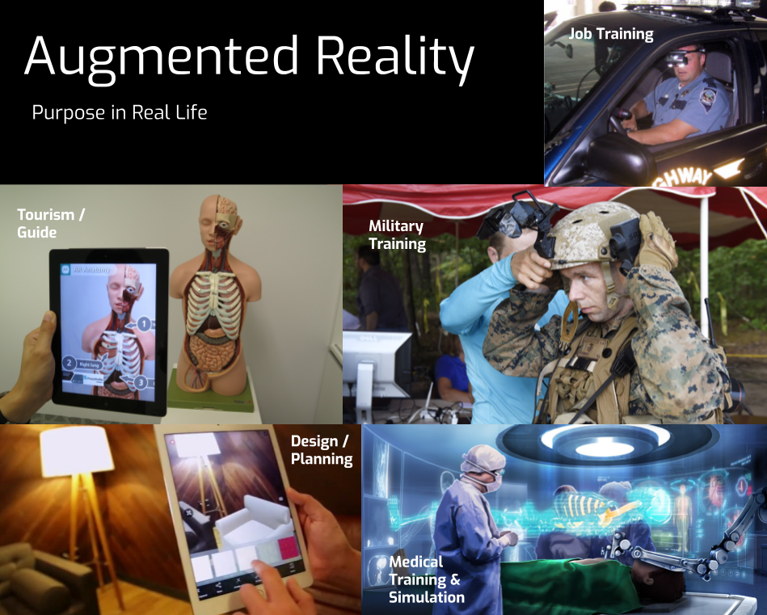

Students further explore the seven key concepts in computer science with the AP College Board approved curriculum, Code.org©. This course will prepare students for the end-of-course AP Exam. Students also complete Introduction to Computer Programming with Python, a Wilmington University Dual Enrollment course.
Below is an image of my Explore Task artifact on the purposes of Augmented Reality in real life. Click here to see a pdf of my Explore Task responses. |
Describe:I used Google Drawings to create a collage of the uses for augmented reality, forming a computational artifact. Each picture represents a different purpose of AR, labeled with a small caption. I discussed one beneficial and one harmful effect of AR, explaining how it affects communication, interaction, and cognition, as well as how computing has impacted innovations in other fields. I used reputable, up-to-date sources. I also discussed the input/output sources of AR and security concerns. Analyze:In order to create a digital artifact, I decided on using Google Drawings because it was a program I was familiar with and I could easily use to format/combine pictures with text. To answer the prompts, I did some research online using reputable and up-to-date sources. I verified information on one source by making sure there were other sources to back it up. I was able to see potential benefits and harms that AR could be associated with, as well as influences that AR has with the economy, society, and culture. For example, AR might limit social interaction, but it can be used as a creative, engaging marketing tactic. Reflect:I was able to learn a lot about AR through this Explore Task, especially recent developments and news. For example, I learned about the security concerns of AR as I read an article discussing how robbers were able to use locations stored in Pokemon Go, an AR game, to rob the users. |
Burger BrosThis app is a timed burger-making game created in JavaScript. Tap or click the app to begin playing! Click here to see a pdf of my Create Task responses or here to see a pdf of the code for this app. Here is a video demonstration of the app: |
|
Describe:I collaborated with a partner to design this app. Within the app, I created several algorithms, such as an algorithm to check whether the burger made was correct. Additionally, I created functions that represented abstractions. For example, the function changeScore() was a generalization that could be used to decrease or increase the score and changeNav the color of the score to reflect the success of the player. I used many logic expressions and loops in my algorithms, and I ran my program several times to debug it. I also designed the icons that the user clicks on to add ingredients. Analyze:This project involved a lot of planning and problem solving. First, I developed a user interface and used pseudocode to plan out the code (incremental process). Then, I started coding and testing my code. A design problem I came across was adding to the burger being built as the user clicked on ingredients. At first, I tried to use elements such as images or drawings of the ingredients and layering them on top of each other as the user adds ingredients. However, I could not clone one element to use multiple times in case the burger asks for two of the same ingredient. I ended up having a much simpler method by using the canvas and drawing rectangles of different color to layer ingredients in the burger. I also used an iterave process to debug the app. I had a problem with keeping score. Every time the score function was called, it set the score to the parameter value of changeScore instead of adding that value to the previous score. Because the score variable was local, causing a new score variable to be created every time changeScore was called, I made the score variable global instead. Another problem I encountered was when checking if the top bun was at the correct index in the array madeBurger. I referred to madeBurger[order.length] as the bun location. However, since order only contained the correct items randomly selected to be within the buns and not the 2 buns, 2 needed to be added to order.length to get the correct length of madeBurger. Also, since indices in arrays start at 0, not 1, 1 needed to be subtracted from the array length to obtain the index. So, I added 1 to order.length. Both developments were independent. Reflect:I really enjoyed working on this project and coming up with solutions to obstacles I came across. I was satisfied with the canvas solution to draw the burger and the fact that I problem-solved by using a solution I hadn't thought about before. I also learned about abstractions and algorithms while working on this project. |
|